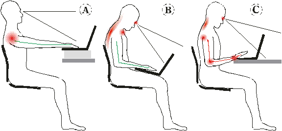
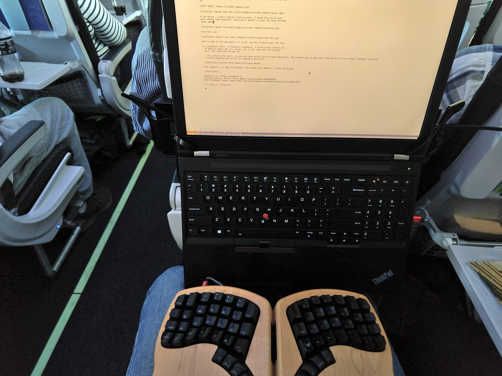
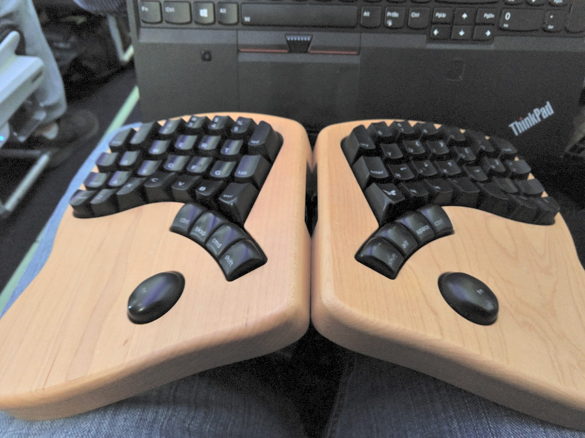
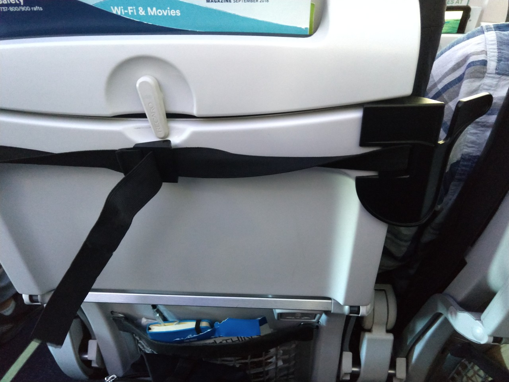
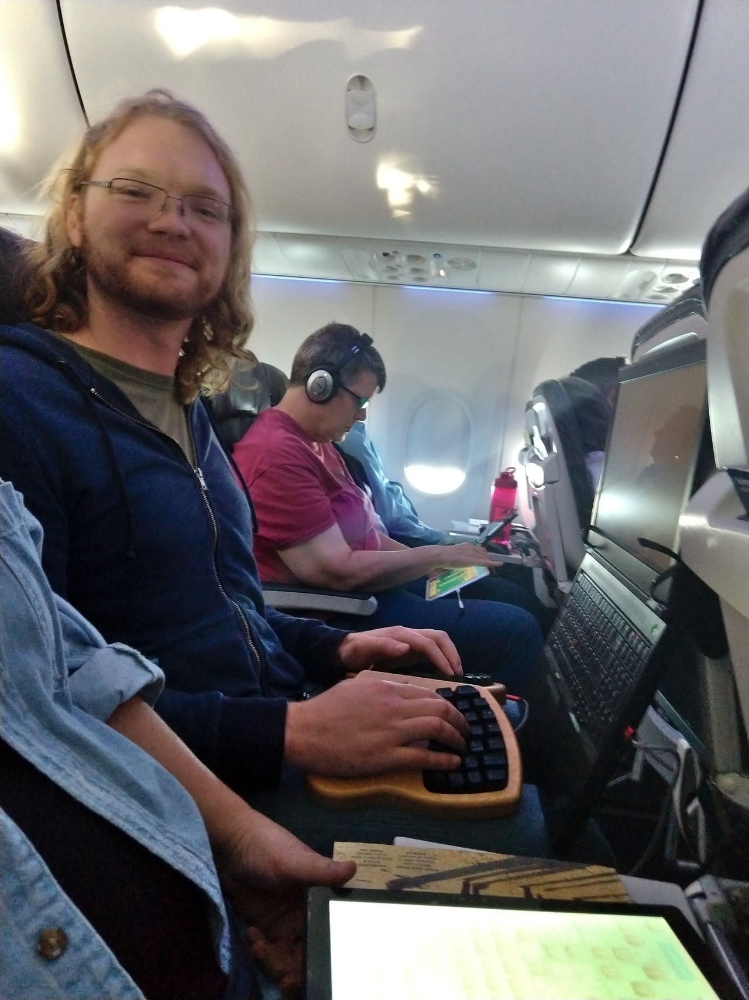
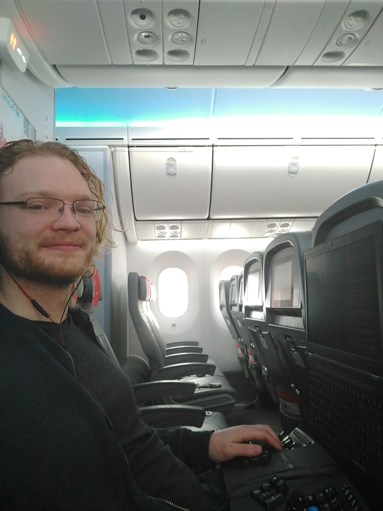
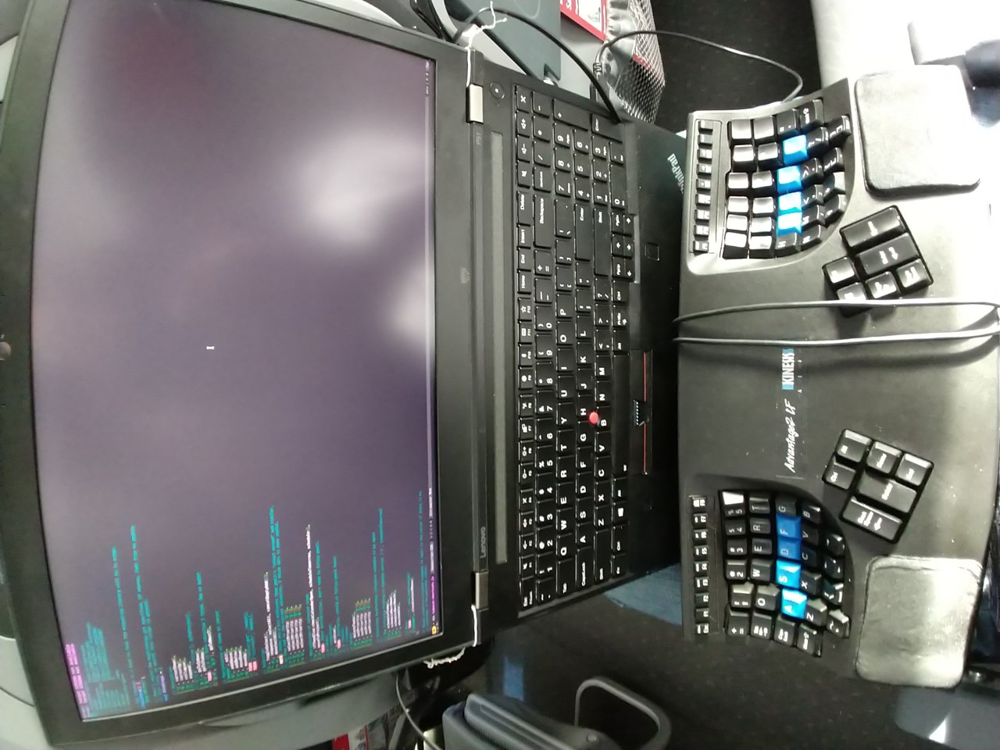
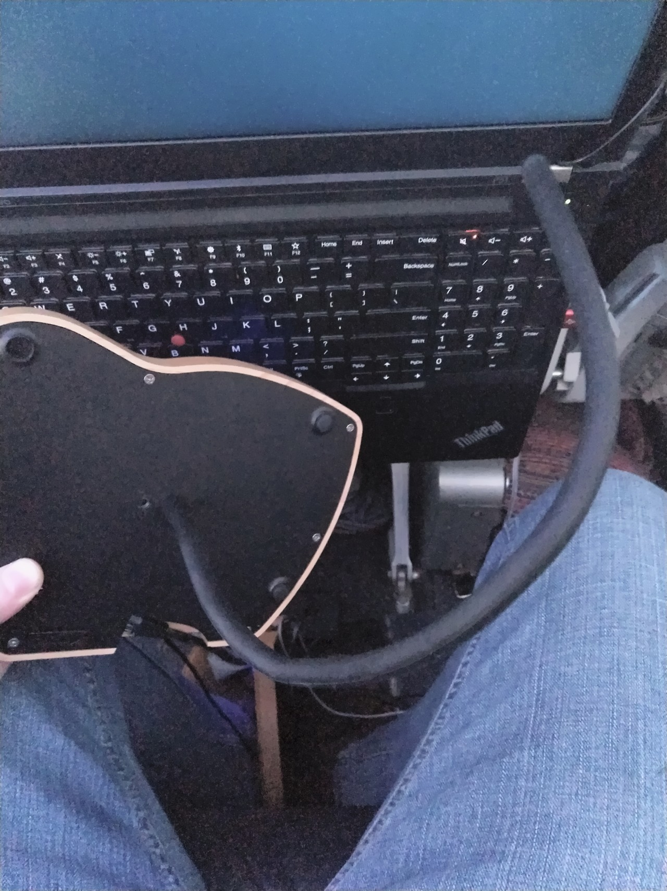
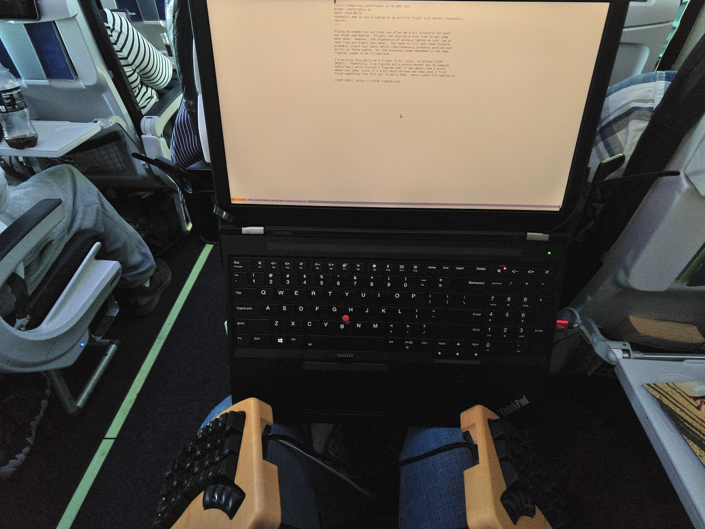
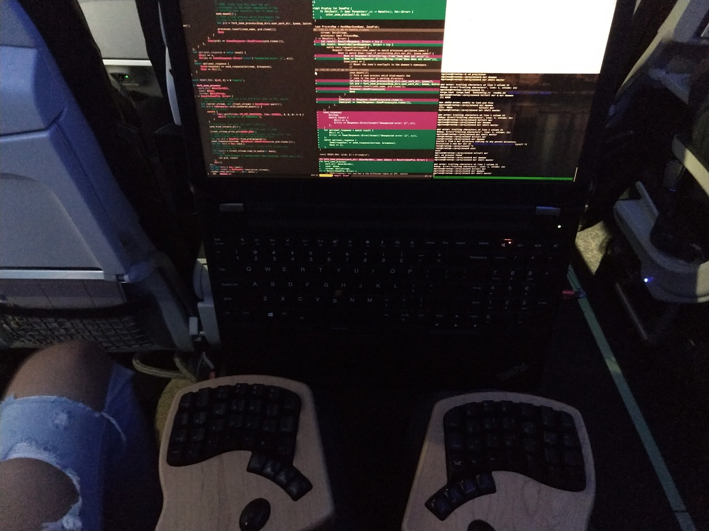

Computing comfortably
at 30,000 feet
Flying on commercial airlines can often be a bit stressful for both our minds and bodies. Flights can also be a nice time to get some work done, but the ergonomics1 tends to be pretty awful. You need to tilt your head forward, probably slouch your back, while simultaneously probably putting your wrists at funny angles. So, the proposed usage embedded in the name "laptop" seems to be inadvisable.

Image from "The Adaptive Laptop". October, 2001. Timothy Griffin
I'm writing this while on a flight to St. Louis, to attend ICFP 2018. Thankfully, I've figured out a pretty decent way to compute comfortably while flying! Here's what I'm looking at:


This feels way better than the alternative! I can hardly believe I put up with the back-hunching, neck-craning, and wrist-compromising positions that you typically get forced into when using a laptop.
Prerequisite: Get a ThinkPad, or get creative
I've only used a setup like this with ThinkPad computers. Many ThinkPads have screens that can tilt all the way back, a bit past 180 degrees, making it straightforward to orient the screen vertically. Many also have strong hinges, with a gap large enough to thread through zip-ties (more on this below). There are probably other laptops out there with these attributes, but I don't know of any off-hand.
It would be great to figure out a simple way to do this sort of thing for other types of laptops. I'll bet there's a good solution, please let me know if you figure out a way to do it!
Step 1: Strap around tray table
In a pinch, you could probably get your laptop into position by perching it on your knees. However, it's bound to eventually fall one way or another, perhaps due to turbulence. I imagine that could be quite catastrophic if your neighbor just purchased some red wine.
The way I resolve this issue is by attaching the laptop to the folded tray table. The first step is to put some variety of strap around the tray table:

In this case, I'm using the strap that comes with the Packed Pixels. Usually it's used to mount the portable screen to the side of your laptop screen – quite handy for the traveling computer user! In this case, the brackets work quite well to keep the strap at the top of the tray table. For some types of tray tables, along with sufficient tightening, they can hold the whole weight of the laptop.
Step 2: Attach laptop to strap
You could probably just put the strap around the front of your laptop, to stabilize it horizontally. However, this would not keep it from falling directly down – it can be rather nice to be able to get up from your seat and leave your laptop hanging.
My preferred way of doing this is to thread releasable zip ties through the laptop's hinges, and around the strap. A couple years ago, I got a hundred 10" zip-ties$, and ever since they've come in handy in innumerable ways, particularly suspending my laptops in a variety of configurations. More on this in future posts!
I don't have a great picture of this on hand, but the zip-ties are fairly visible in this picture:

The resulting comfort and health totally makes up for looking a bit unconventional :)
Recommendation: Get a decent keyboard
As illustrated in the picture at the beginning of this post, it's nearly impossibly to use a laptop keyboard without compromising ergonomics one way or another. So, it's good to have an external keyboard – ideally a decent one! Here are a few keyboards I like to use:
Keyboardio Model 01 – the keyboard I'm using in the photos above. It's the best keyboard I've found for traveling without compromising ergonomics or typing feel. It also looks great!
ErgoDox – another great split keyboard. I have only used the Massdrop kits that used stacked acrylic, which was quite heavy, not so great for travel. I'm guessing the more modern ErgoDoxen are lighter.
Kinesis Advantage 2 – probably my favorite keyboard for overall typing satisfaction, particularly the "Linear Feel" model that uses Cherry Red key switches instead of Cherry Blues. The main problem with this keyboard for travel is that it takes up quite a lot of volume, though it is quite a lot lighter than it looks like it would be. I used it on a long flight in early 2018, and somehow ended up with a whole row to myself:

All of these keyboards share the following great attributes:
Lots of keys under the thumbs, particularly nice for modifier keys.
Keys laid out in columns – fingers aren't that great at moving side-to-side.
Enough distance between the hands, so that wrists aren't contorted.
Mechanical switches – perhaps an acquired taste – but very satisfying to type on.
None of these suggestions are as portable as I'd like. I'd love to have a travel keyboard that had all of these attributes except using membrane switches instead of mechanical, so that it can pack up smaller.
Step 3: Enjoy ergonomic airplane computing!
Once your screen is elevated closer to eye level, you can sit back, and productively enjoy your flight. So far my experience with doing this has been quite positive – I no longer feel that I need to choose between health and computering while flying!
There is a bit more setup to this than just taking your laptop out of your bag – at first it might even seem to be too much of a hassle. After a few iterations, though, I've found that the amount of time spent on setup and fiddling reduces quite a bit each time. For me, even the initial hassle was well worth the dramatic improvement in ergonomics.
I hope that you give this a try! I'm writing this post in order to share the idea and encourage people to use their computers in healthier ways.
Variation: Model 01 tilted outwards via flexible mounts
One of the great things about the Keyboardio Model 01 is that it has a 1/4" camera mount on the bottom. This easily allows for all kinds of mounting possibilities. Right before my flight to ICFP, I got a couple "Aobelieve Flexible Twist Mounts"$. They turned out to work surprisingly well for keeping my keyboard in place, by wrapping around each leg:

This makes it feasible to use the keyboard tilted outwards, which can be quite comfortable:

It can go as far as being entirely vertical, but that does not seem to work well for me on airplanes due to usually not having much space.
Variation: Model 01 without mount
On my flight back from ICFP, I realized that I could actually do fine without the camera mounts. So, for science, I decided not to use them and instead just perched each half of the keyboard on each leg. It actually worked quite nicely. Compared with using the camera mounts, I could get the halves further apart while keeping them horizontal. The main downside is that I found myself often pressing with my palms to keep it in place – not great for correct typing ergonomics.

Other Possibilities
It should be possible to do this with laptops like MacBooks, which do not open to 180 degrees and do not seem to have easily thread-able hinges. I'm imagining some sort of harness to provide the attachment points, along with a wedge to prop up the keyboard at an angle, such that the screen can be vertical.
For what I do, it's best to have a full-on workstation laptop. However, for many people an iPad or similar should be sufficient for things like email, web browsing, and writing. Should be pretty straightforward to use an iPad in this mode, you just need some form of harness for attachment. Perhaps simply by folding back the screen cover portion of an iPad case back and tucking it behind the tray table?
It would be really nice if laptops had detachable screens, such that the screen and keyboard could still be used while detached. Perhaps such a thing already exists?
- Edit: In discussion with others, I realized that you could simply use a tablet with a bluetooth keyboard. There may also be aftermarket bluetooth keyboards that can be connected directly with devices like the Microsoft Surface, but I haven't looked.
Feel free to contact me at mgsloan@gmail.com if you've given something like this a try, have figured out variations, or have questions. I'm curious to see what y'all come up with!
Discussion Links
Discussion on keyboard.io forums
- In that thread,
jazzfan1980mentions there that they have a similar setup involving a commercial product called tablethookz, but adapted to a Surface Pro.
- In that thread,
Footnotes
I am a hobbyist in ergonomics, I have no credentials related to ergonomics, nor have I studied much of the academic literature on the topic. Mostly, I've just followed my own intuition, sought what feels good, and avoided what causes pain. So please take my advice with a grain of salt, and perhaps experiment to see what works for you!↩︎
Some links are amazon affiliate links, which sometimes send me a bit of money when you make purchases after clicking them. The purpose of this blog is sharing information and ideas, not making money. But I figure I may as well add them, and I appreciate usage of them!